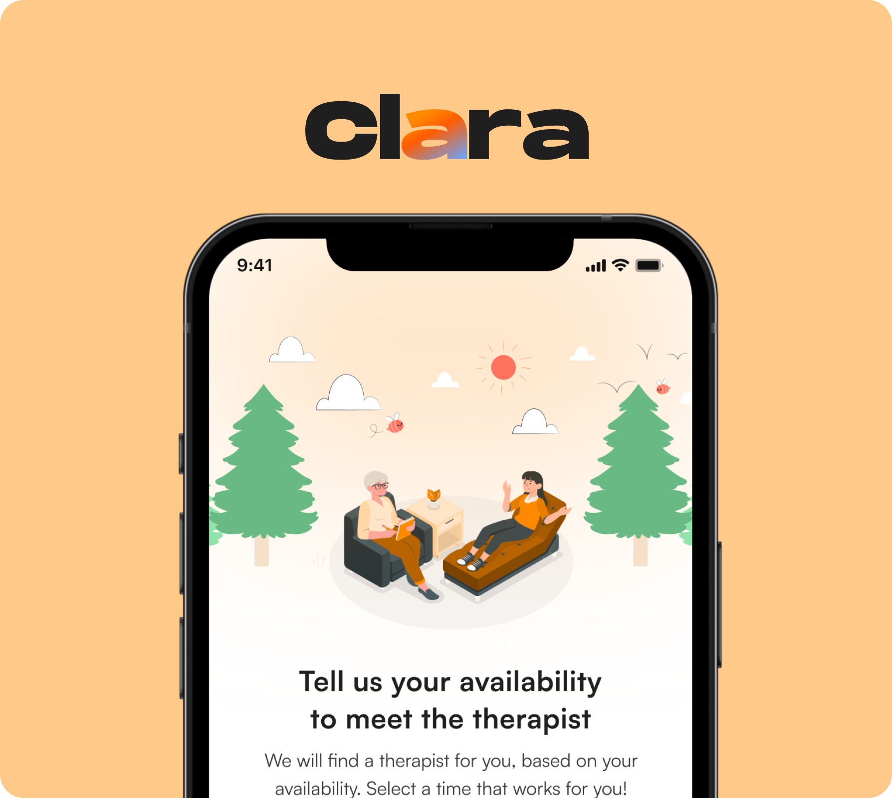
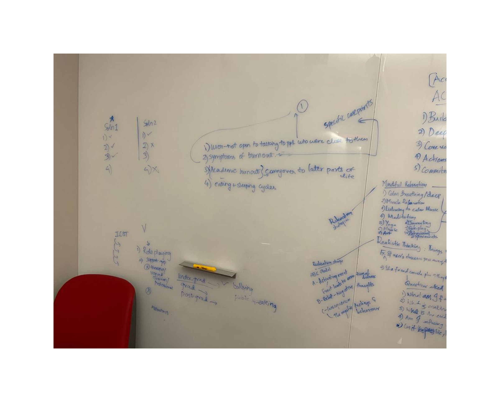
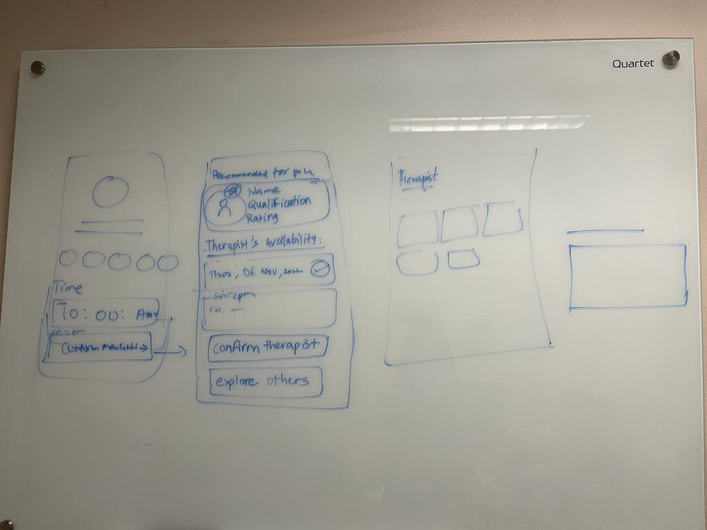
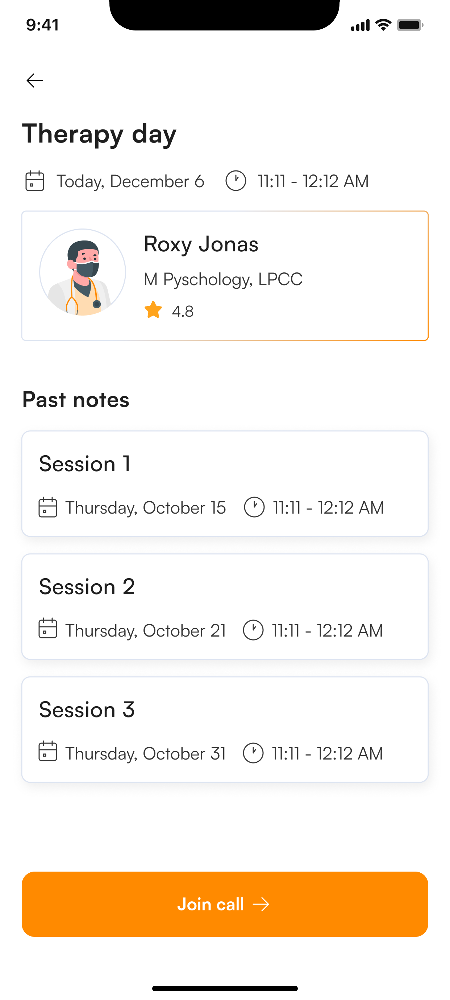
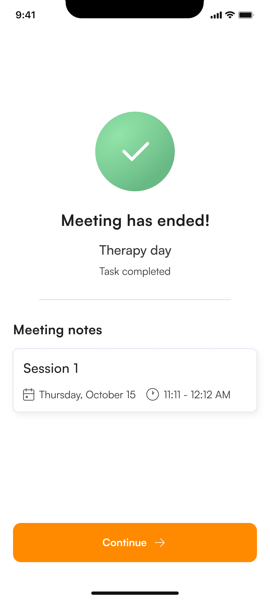

Designing an AI companion that knows when to step aside.
Clara helps students begin with low-effort burnout support, then makes the transition to therapist-led care visible when AI should not continue alone.
ROLE
Product design · research synthesis
SCOPE
Discovery through prototype validation
TEAM
Student product team
CONTEXT
Student burnout · mental health support
CLARA · CARE HANDOFF CONCEPTRESPONSIBLE AI

01 · CHECK IN02 · SUPPORT03 · HAND OFF
Clara's interface became evidence for a larger product question: when should AI help, pause, or hand off to a person?
WHAT CLARA DOES
Turns a burnout check-in into a recovery roadmap, lightweight tasks, therapist scheduling, live sessions, and session notes.
THE PRODUCT PROBLEM
Support had to feel easy to start, but safe enough to stop when the user needed human care.
MY CONTRIBUTION
I shaped the interaction model, handoff logic, responsible-AI boundaries, prototype flows, and validation criteria.
THE CONSTRAINT
Clara could not diagnose, perform therapy, hide uncertainty, or move private context without visible user control.
STARTING ASSUMPTIONA warmer AI companion would make burnout support easier to begin.WHAT TESTING REVEALEDWarmth was not enough. Users needed to understand when Clara stopped, what moved to the therapist, and who owned the notes.PRODUCT RESPONSEDesign the boundary: low-risk support stays with Clara; interpretation, handoff, and care ownership move to a human.
RESEARCH SNAPSHOT
12 students tested self-guided recovery flows. 4 experts reviewed therapist handoff experiences. 3 of 4 experts struggled with session-note ownership.
01THE BOUNDARY
FROM WELLNESS FEATURE TO CARE BOUNDARY
The real design problem was deciding what AI should never do.
Early framing made Clara sound like an AI recovery companion. That was too broad for a sensitive mental-health domain. The project needed clearer boundaries: which moments are safe for automated support, which require transparency, and which must move toward human judgment.
DESIGN SHIFT
The project moved from designing a warmer companion to designing a bounded AI system.
This shifted the work away from "we used AI" and toward the harder design question: how to make AI useful without letting it overreach.

THE INSIGHT THAT CHANGED THE PRODUCTWe stopped designing Clara as a therapist.The breakthrough was not a new screen. It was a boundary: Clara could guide reflection and recovery tasks, but it should not become a therapist, diagnosis engine, or invisible data broker.
The interface could not be judged only by whether it felt warm. It had to be judged by whether a user could tell when Clara was listening, when it was uncertain, and when a person needed to take over.
02THE DEBATE
TURN RESEARCH INTO PRODUCT JUDGMENT
The question shifted from “what should Clara do?” to “what should Clara refuse to do?”
The messy part was choosing between emotionally appealing directions. A warmer AI coach would be easier to sell. A therapist-like companion would feel more magical. But both created the wrong kind of trust for a mental-health product.
✦
RESEARCH + DESIGN SYNTHESISFrom burnout signals to design constraints
Signal Students may not have bandwidth for heavy setup.
Response Keep tasks short, skippable, and easy to change modality.
02Disclose the AI role.
Signal A warm AI can be mistaken for clinical authority.
Response Never imply diagnosis, therapy, or hidden certainty.
03Make handoffs visible.
Signal Users lost track of therapist sessions and note ownership.
Response Explain why a therapist is recommended and what happens next.
DIRECTIONWHY IT WAS TEMPTINGWHY IT CHANGED
AI coach
Frequent check-ins could make Clara feel available when students were not ready to ask a person for help.
Availability risked becoming dependency. Clara needed to support recovery tasks without becoming the primary relationship.
Therapist simulator
More emotionally responsive conversations would make the prototype feel personal and impressive.
That blurred clinical authority. In this domain, “feels like therapy” can become more dangerous than useful.
Supervised support
AI could still reduce activation energy while therapists owned interpretation, care planning, and higher-risk moments.
The tradeoff was a less magical product, but a more honest one: every sensitive transition needed a visible handoff.
03DECISION ONE
DESIGN FOR LOW ENERGY, NOT IDEAL BEHAVIOR
Support needed to fit the user's capacity, not demand more from it.
Burnout recovery tools often assume focus, time, and motivation. Clara's first interaction had to be short, forgiving, and easy to abandon without guilt. Voice was useful only if it reduced effort; it could not become a performance of therapy.
REJECTED DIRECTIONLong intake before support
Heavy onboarding would ask for effort at the exact moment the user may have the least capacity.
PRODUCT DECISIONBegin with a small check-in
Let the user start with a low-stakes prompt, then progressively reveal options based on comfort and risk.
EDGE CASELet users stop safely
Pause, skip, or exit states should not punish the user or make recovery feel like another task they failed.
PROTOTYPE 01
Small check-ins reduced the cost of starting because the flow removed commitment.
This flow demonstrates the interaction decision: begin with one lightweight prompt, keep exits visible, then reveal support paths only after the user has started.
One question firstStart with a low-effort signal instead of a long intake.
Pause without penaltyLet users stop without making recovery feel like another failed task.
Progressive supportMove from check-in to recovery options only when the user is ready.
Open Figma prototype ↗Annotated proof: the interaction starts with a small prompt, not a heavy onboarding flow.
04DECISION TWO
MAKE ESCALATION TRANSPARENT
The handoff had to feel like care, not punishment.
If Clara detected ambiguous or higher-risk language, the system could not keep improvising. The design needed a clear interruption: acknowledge uncertainty, explain why additional support may help, ask consent where appropriate, and make human resources visible.

Escalation sketch: define the moment the automated flow should stop and a human path should become primary.
HANDOFF JOURNEY
What happens when Clara stops?
1User needs more support
Language or task patterns suggest Clara should not keep coaching alone.
2Clara pauses
The system names its limit and explains why a therapist may help.
3User reviews shared context
Only useful, user-approved context moves forward.
4Therapist owns care
Interpretation, planning, and session notes belong to the human care path.
HIGH-STAKES ALTERNATIVE
Keep the AI conversation going to preserve engagement.
WHY WE REJECTED IT
In a mental-health context, engagement is not the highest-order metric. When risk rises, the product should optimize for safety, clarity, and human support.
HANDOFF AUDIT
The therapy flow could route users to human care, but testing showed the handoff was not legible enough.
The critical product moment sits before and after the call: why this therapist, what context moved, and who owns the notes.
Before the sessionTherapy day shows a human provider and past sessions, but it does not yet explain why this therapist was recommended or what Clara will share.
After the sessionMeeting notes appear as a task result, but the source is ambiguous: therapist note, user note, or AI-generated summary?
Design responseThe next pass should add therapist rationale, share-context review, and session-note source labels.

BEFORE SESSIONHuman care is visible, but rationale and data-sharing are not.

AFTER SESSIONNotes are accessible, but source and ownership are unclear.
FIX 01Therapist rationale
Show why this therapist was recommended, expected session cadence, and comparable alternatives.
FIX 02Share-context review
Before handoff, summarize the minimum context Clara will share and let users edit non-urgent details.
FIX 03Session-note source labels
Separate therapist notes, user notes, and AI task summaries so ownership is visible.
05THE PROTOCOL
SYSTEMIC GUARDRAILS
Responsible AI became a failure-state protocol.
Section 04 explains the normal handoff workflow. This section is different: it defines what Clara should do when the system is at risk of overreaching, hiding context, or creating false authority.
FAILURE STATEGUARDRAILUSER-FACING RECOVERYOWNER
Clara sounds like it is diagnosing.
Block clinical labels and keep CBI-style results framed as signals.
Explain uncertainty and offer therapist-led interpretation.
Qualified human supportPrivate context could move invisibly.
Require share-context review before non-urgent therapist handoff.
Show exactly what will be shared, with edit and pause options.
User consentSession notes lose source and ownership.
Separate therapist notes, user notes, and AI task summaries in the notes model.
Label every note by source, session number, and who can see it.
Therapist workflowUser language suggests urgent risk.
Stop the normal AI flow and prioritize immediate human resources.
Name Clara's limit clearly instead of continuing as a coach.
Safety protocol
06THE BREAK
WHAT TESTING CHANGED
Validation exposed the real weakness: ownership became invisible.
The prototype did not fail because people disliked the concept. It failed where the system moved between AI tasks, therapist sessions, and recovery history without making ownership obvious enough.
WHAT WORKEDExperts accepted the boundary model.The review suggested the concept was usable, while the small sample kept the finding directional rather than definitive.WHAT BROKESession notes were the highest-failure task.3 of 4 experts struggled to find or understand recent therapy notes.WHAT CHANGEDThe roadmap shifted toward three handoff fixes.Therapist rationale, share-context review, and session-note source labels became the next product priorities.
The important validation signal was not that Clara scored well; it was that the highest-failure task pointed directly to the product boundary that needed more design.
07THE OUTCOME
DIRECTIONAL OUTCOME
The concept validated well enough to continue, but the product direction changed.
As a research-driven concept, the outcome was not a post-launch metric, but a validated product strategy: AI support is useful only when its limits, handoff, and ownership model are legible.
SELF-GUIDED FLOWS12students tested low-effort recovery support↓EXPERT REVIEW3/4struggled with session-note ownership↓PRODUCT RESPONSE3handoff fixes became priority
NEXT VALIDATION PRIORITY
1Can users find recent therapy notes without help?2Can they tell what came from Clara, themselves, or the therapist?3Can they review what context moves during therapist handoff?
These are proposed validation directions, not post-launch impact claims. That distinction matters because the domain is sensitive and the prototype was not clinically deployed.
REFLECTION
Trust did not come from making Clara feel more human. It came from making Clara's limits visible.
Clara changed how I think about AI products. Making the system feel supportive mattered, but the harder design work was defining what it refuses to answer, when it asks permission, and how it moves someone toward qualified human care.